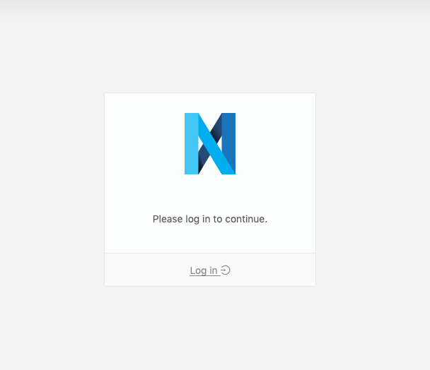
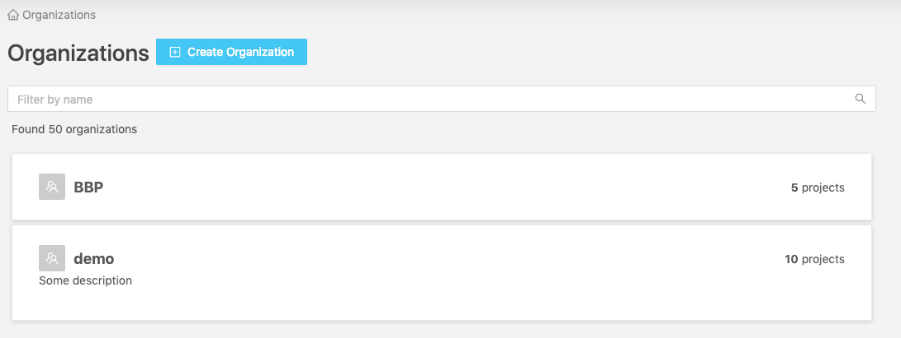
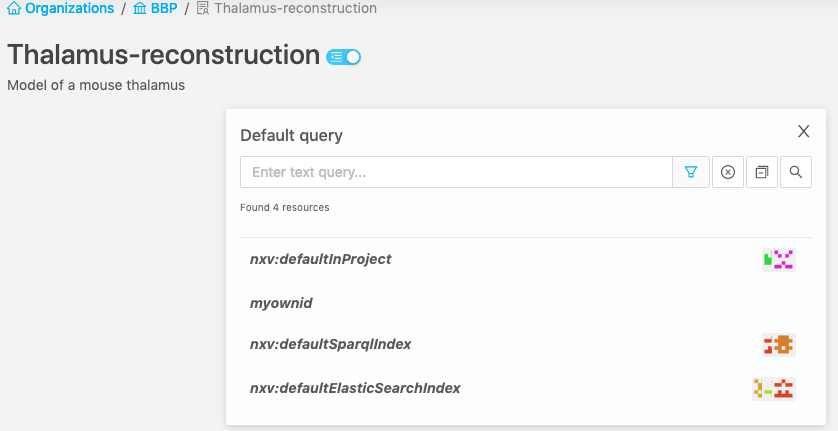
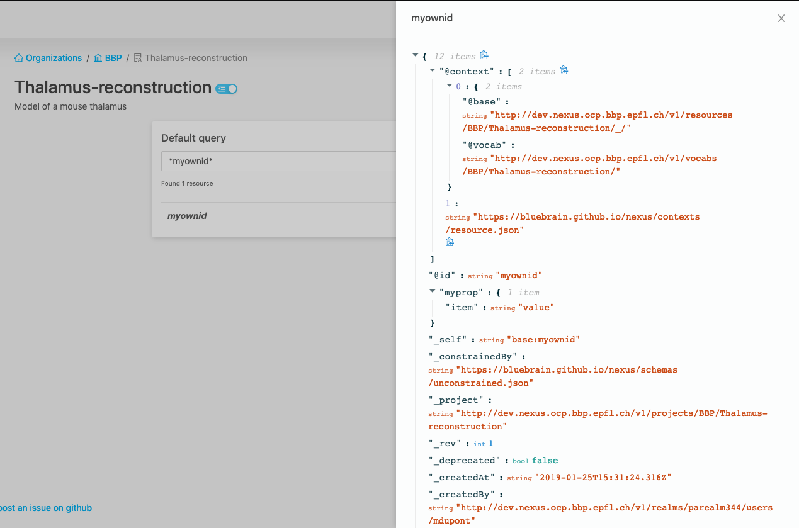
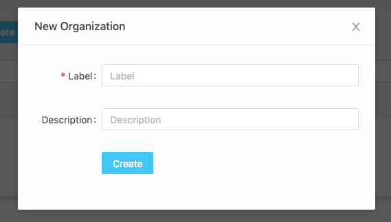
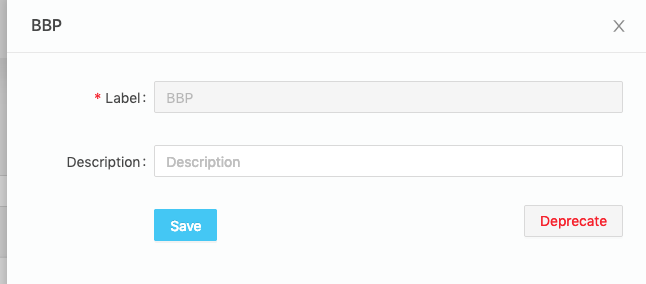
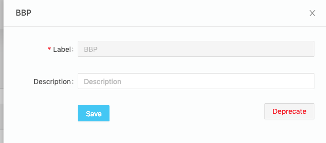

Web applications
Nexus Web
Nexus Web is the web interface for Blue Brain Nexus, allowing users to interact with data and perform administration tasks. It is being actively developed and new features are regularly added.
It currently contains the following features:
Login
You can login with your user to access non-public resources (depending on your permissions).

Copy Auth Token for reuse with other Nexus-related tools
Once logged-in, you can copy your authentication token, in order to easily reuse it in, for example, an IPython Notebook or the Nexus CLI client.
Browsing data
To group and control access to your data, Nexus provides you Organizations and Projects. Much like in Github (if you’re familiar with it), there are Organizations which contain Projects (Repositories in Github), which in turn contain your data (files in GitHub, Resources in Nexus).
In Nexus Web, the landing page will show you the list of Organizations you have access to.

After selecting an organization, you will see the list of Projects you have access to inside this organization.

Select a Project, you’ll get to the list of its Resources.

You can search resources using the ElasticSearch query syntax.

Click on a resource and you’ll see its full payload in a side panel, in the JSON-LD format.

Advanced use-cases
If you want to have several filtered lists of resources side by side, you can create additional filterable lists by using the “New Query” button in the side panel. It can be handy to make comparisons, or to build a set of ElasticSearch queries we want to reuse in an IPython Notebook or in a script.


You can also clone one of the active Queries to use it as a starting point.
If you need to make complex ElasticSearch queries or if you want to see the raw payload returned by ElasticSearch, you can click on “ElasticSearch query editor”. Results will be displayed in JSON-LD format.


For graph and RDF-related queries, we also offer a SPARQL query editor that runs against our triple-store. Results are displayed in a table.


Managing your Nexus instance
Creating an Organization
Click on the “Create organization” icon next to the title of the homepage to create a new organization.

Editing or deprecating an Organization
On the list of organizations, click on the “edit” button that appear when hovering on an organization. You’ll be able to edit the description of the organization and hit “Save” to modify it. To deprecate the organization, hit the “Deprecate” button.
 

Creating a Project
Navigate to the organization where you want to create your project. Click on the “Create Project” icon next to the title of the page.

Editing or deprecating a Project
Navigate to the organization where your project is. Click on the “Edit” button that appear when you hover a project in the list. You’ll be able to edit its description and hit save to modify it. Hit “Deprecate” to deprecate the project.


Making a project publicly accessible
Navigate to the edition page for the project. Hit the “Make project public” to make the project and all the data it contains publicly accessible.

Creating Resources
Navigate to the project where you want to create a resource. Click on the “Create Resource” button in the right sidebar. Build the JSON payload with the help of the interactive editor, then hit “Save”.